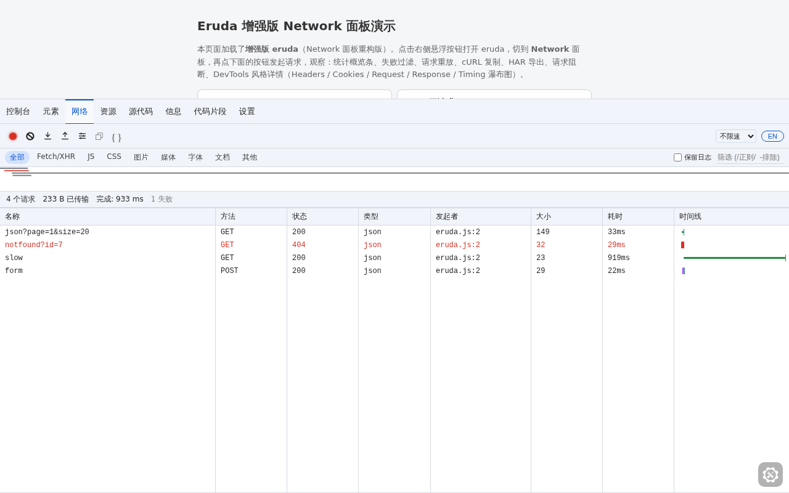
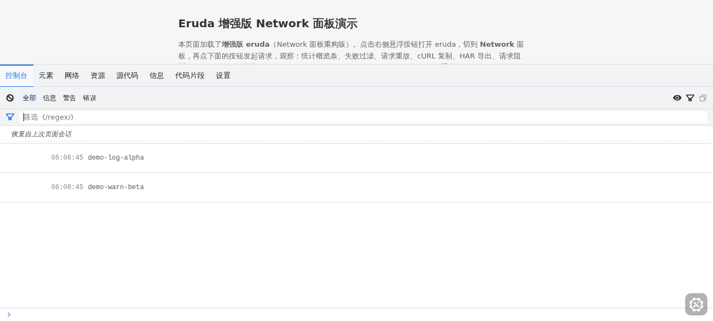
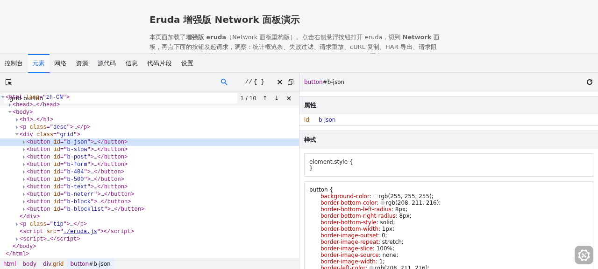
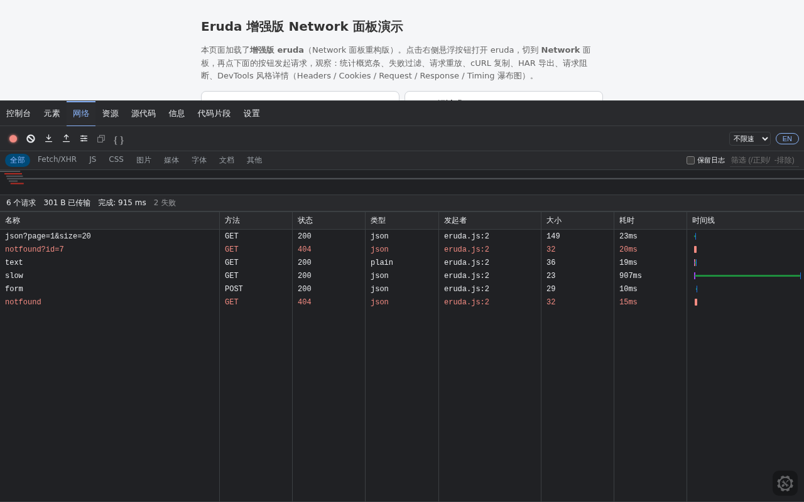

覆盖 Console / Elements / Network / Resources / Sources / Info / Snippets / Settings 全部内置工具
亮 / 暗双主题设计令牌、13px 紧凑排版、等宽数据字体、扁平弹窗、细滚动条、导航指示条，兼容上游 17 套第三方主题。
默认跟随 navigator.language，设置中可切换 中文 / English，即时生效、无需刷新、选择持久化。
九类筛选 Chip、Overview 时间轴、七列排序表格、迷你瀑布、状态栏、自动分屏，详情 6 页签含 Initiator 调用链与七段 Timing。
借鉴 ProxyPin：URL 黑名单（字面量 + /regex/）模拟 403，顺序 Rewrite 规则，自定义 status / contentType / body 的 Mock 响应，Slow 3G / Fast 3G / Offline 节流。
HAR 导入导出、Copy as fetch / cURL、正则搜索（支持 - 排除语法）、失败请求红色高亮、Preserve Log 保留请求。
Live Expressions 实时表达式监控、内联正则筛选框、Preserve Log 刷新保留 300 条日志（带时间戳与会话分隔线）。
DOM 搜索：选择器优先、全文降级，↑↓ 导航与 x/y 计数；Copy selector / XPath 一键复制。
完整构建 dist/eruda.js 单文件零依赖；或 独立插件 eruda-network-plus.js 挂在官方 eruda 上，还有基于 v3.4.3 的 git apply 源码补丁。




<!-- 单文件 · 零依赖 --> <script src="https://cdn.jsdelivr.net/gh/masgzy/eruda-plus@0.1.0/dist/eruda.js"></script> <script> eruda.init(); // 网络规则示例 eruda.get('network').block('/api\\/tracker/'); eruda.get('network').mock('/api/user', { status: 200, body: '{"mock":true}' }); </script>
<script src="https://cdn.jsdelivr.net/npm/eruda"></script> <script src=".../dist/eruda-network-plus.js"></script> <script> eruda.init(); eruda.remove('network'); eruda.add(new window.erudaNetworkPlus()); </script> // 本地演示（零依赖） // git clone https://github.com/masgzy/eruda-plus // node demo/server.js → http://localhost:3456